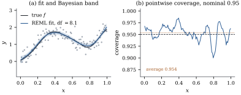

43.6 Mixed-model and Bayesian representations
The criteria of Section 43.5 treat
43.6.1. Splitting the penalty
The obstacle is that
Let
(a) (The transformation.)
(b) (The mixed model.) With
which is the penalized criterion Eq. 32.3.6 of the linear mixed model
Its solution is Henderson’s (Theorem 32.3.2):
(c) (The Bayesian reading.) Suppose
with
(d) (REML.) The marginal distribution is
where
Proof.
(a) From
(b) Substituting
(c) The prior is flat in
(d)
Idea. The same algebra has now been
read three ways. A quadratic penalty is a shrinkage rule
(Theorem 27.2.2), a
normal prior (Proposition 39.5.1)
and a variance component. Only the third makes the
tuning constant estimable, because only the third
supplies a probability model for the coefficients and
with it a likelihood in
Remark (What the transformation looks
like). For a second-order difference penalty,
43.6.2. Bands that know about the bias
Proposition 43.5.1(e)
left a problem: the obvious interval is centred at
Let
(a) Under Theorem 43.6.1(c),
(b)
(c) (Stated, not proved.) Treating
Proof.
(a) By Eq. 43.6.3,
(b)
Part (c) is not proved here; see the notes.
Warning. “Across-the-function” is a
weaker guarantee than it sounds. Count how often the
band contains the true curve across the design points
and the fraction is about
Take
Over

import numpy as np
def f_true(x):
"""The mean function of Section 43.1."""
return 2 * x + np.exp(-25 * (x - 0.35) ** 2) - 0.75 * np.exp(-50 * (x - 0.80) ** 2)
def uniform_knots(a, b, K, d):
"""K interior knots equally spaced in (a, b), continued d further steps at each end."""
delta = (b - a) / (K + 1)
return a + delta * np.arange(-d, K + 2 + d)
def bspline_basis(x, kn, d):
"""The B-splines of degree d on the knot vector kn, by the de Boor recurrence."""
x = np.atleast_1d(np.asarray(x, float))
B = np.array([(x >= kn[j]) & (x < kn[j + 1]) for j in range(len(kn) - 1)], float).T
last = np.max(np.nonzero(kn[:-1] < kn[1:])[0])
B[x == kn[-1], last] = 1.0
for deg in range(1, d + 1):
C = np.zeros((len(x), B.shape[1] - 1))
for j in range(C.shape[1]):
if kn[j + deg] > kn[j]:
C[:, j] += (x - kn[j]) / (kn[j + deg] - kn[j]) * B[:, j]
if kn[j + deg + 1] > kn[j + 1]:
C[:, j] += (kn[j + deg + 1] - x) / (kn[j + deg + 1] - kn[j + 1]) * B[:, j + 1]
B = C
return B
def split_penalty(P, tol=1e-9):
"""Bases X_g of N(P) and Z_g of its complement with Z_g' P Z_g = I and X_g' P = 0."""
e, U = np.linalg.eigh(P)
pos = e > tol * e.max()
L = U[:, pos] * np.sqrt(e[pos]) # P = L L' with L of full column rank
Xg = U[:, ~pos] # the null space of the penalty
Zg = L @ np.linalg.inv(L.T @ L)
return Xg, Zg
n, sigma, K, d, k = 120, 0.25, 20, 3, 2
x = (np.arange(1, n + 1) - 0.5) / n
kn = uniform_knots(0.0, 1.0, K, d)
B = bspline_basis(x, kn, d)
m = B.shape[1]
Dk = np.diff(np.eye(m), n=k, axis=0)
P = Dk.T @ Dk
Xg, Zg = split_penalty(P)
X, Z = B @ Xg, B @ Zg
r = Z.shape[1]
rng = np.random.default_rng(431)
g = rng.normal(size=m) # any coefficient vector
beta_u = np.linalg.solve(np.column_stack([Xg, Zg]), g)
print("the penalty, in the old and the new coordinates:", g @ P @ g, beta_u[k:] @ beta_u[k:])
y = f_true(x) + sigma * rng.normal(size=n)
lam = 1.0
fit_pen = B @ np.linalg.solve(B.T @ B + lam * P, B.T @ y)
C = np.block([[X.T @ X, X.T @ Z], [Z.T @ X, Z.T @ Z + lam * np.eye(r)]]) # Henderson's equations
sol = np.linalg.solve(C, np.concatenate([X.T @ y, Z.T @ y]))
fit_mix = X @ sol[:k] + Z @ sol[k:]
print("penalized fit versus mixed-model fit:", np.max(np.abs(fit_pen - fit_mix)))Uz, sz, _ = np.linalg.svd(Z, full_matrices=False) # the design is fixed, so do this once
def reml(y, lam):
"""Profiled REML criterion (to be minimized) for V = I + Z Z' / lam."""
w = sz**2 / (lam + sz**2)
def Vi(M): # multiplication by V^{-1}
M2 = M if M.ndim == 2 else M[:, None]
out = M2 - Uz @ (w[:, None] * (Uz.T @ M2))
return out if M.ndim == 2 else out[:, 0]
logdetV = np.sum(np.log1p(sz**2 / lam))
ViX = Vi(X)
A = X.T @ ViX
resid = Vi(y) - ViX @ np.linalg.solve(A, ViX.T @ y)
s2 = y @ resid / (n - k)
return 0.5 * ((n - k) * np.log(s2) + logdetV + np.linalg.slogdet(A)[1]), s2
def reml_lambda(y, grid):
return grid[int(np.argmin([reml(y, l)[0] for l in grid]))]
grid = np.geomspace(1e-6, 1e6, 121)
lam_reml = reml_lambda(y, grid)
S_reml = B @ np.linalg.solve(B.T @ B + lam_reml * P, B.T)
df_reml = np.trace(S_reml)
gcvs = []
for l in grid:
S = B @ np.linalg.solve(B.T @ B + l * P, B.T)
gcvs.append(np.mean((y - S @ y) ** 2) / (1 - np.trace(S) / n) ** 2)
lam_gcv = grid[int(np.argmin(gcvs))]
df_gcv = np.trace(B @ np.linalg.solve(B.T @ B + lam_gcv * P, B.T))
print(f"REML: lambda = {lam_reml:.3g}, df = {df_reml:.2f}; GCV: df = {df_gcv:.2f}")43.6.3. REML against the criteria, and full Bayes
REML and GCV estimate different things. GCV aims at
prediction error; REML maximizes a likelihood under the
assumption that
Remark (Full Bayes). Theorem 43.6.1(c) fixes
43.6.4. What this book does not do with smoothing
Three threads end here rather than continue, and it is only fair to name them.
Adaptive smoothing. A single
Simultaneous bands. Eq. 43.6.5 is pointwise, or at best across-the-function; a band containing the whole curve with a stated probability needs the tube formula of Sun and Loader (1994) or a bootstrap over the whole fit.
Shape constraints. Monotone, convex or unimodal fits add linear inequality constraints to Eq. 43.3.1, a quadratic program; Ramsay (1988) treats the monotone case.
What does continue is the penalty. Everything after Section 43.2 rests on one idea — a rich basis, a quadratic penalty, a trace that counts what was spent, and a variance ratio that can be estimated — and that idea is indifferent to how many covariates there are, to whether the response is normal, and to which parameter of the response distribution is modelled. Chapter 44 adds covariates and Chapter 45 parameters, both by writing down more terms of the form Eq. 43.3.1.
43.6.5. Exercises
A. Check your understanding
Using Eq. 43.6.2, say what
Solution.
B. Practice
Run the simulation of Example (The three criteria on one data set, and over 200 of them)
again with
Example (Measuring the coverage)
uses
C. Going deeper
Show that in the mixed model of Theorem 43.6.1(b), the
BLUP satisfies
Solution. The second block of
Henderson’s equations is
The prior of Theorem 43.6.1(c) is
improper on